English copy, then the current phone screen, then a box for the wording you want instead. Click Save when you want to keep it. Saving updates the address bar and copies that link. Anyone who opens the copied link sees your wording. Shot on 24 Nov 2026 from the test account. The empty log, quiet day, and future day were shown by hiding that account’s moments in the screenshot browser only. Nothing was deleted, and the account was not signed out.
| Where | Copy | Screen | New copy |
|---|---|---|---|
| Log, nothing written yet |
Your log · Empty for now Your logs live here. Everything you write lands here, newest first. Start with whichever one’s loudest today. What was good? What was hard? What surprised you? |
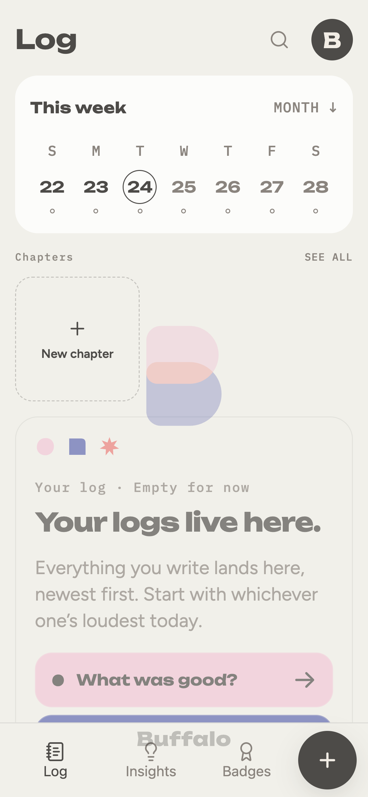 |
|
| Log, a past empty day |
A quiet one on the log. Sunday’s still open. Add whatever you remember, even one line counts. Add to Sun, Nov 22 On today, that button reads Log today. |
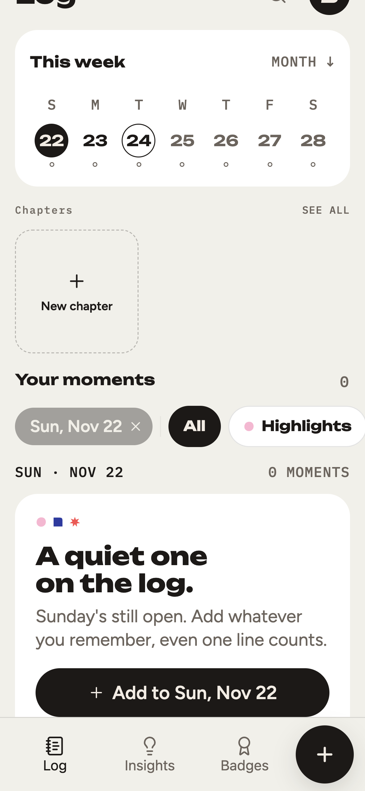 |
|
| Log, a future day | Nothing here yet. |
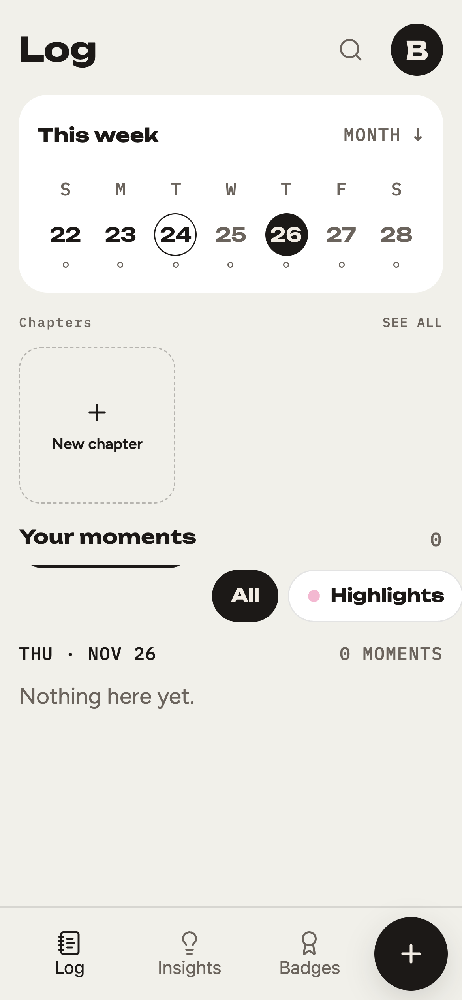 |
|
| Search | No loaded moments mention “zzzz-no-moment”. |
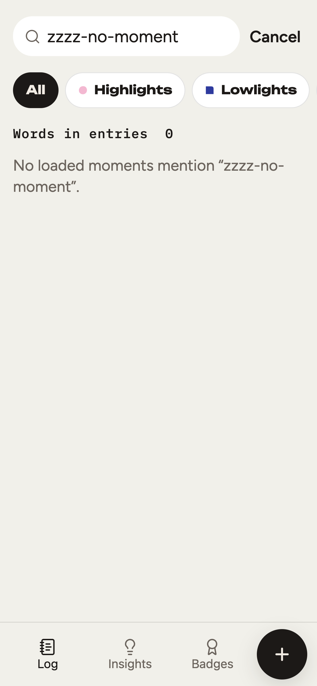 |
|
| Search, one category |
No highlights mention “zzzz-no-moment”. The same line for the other filters: No lowlights mention “…” and No surprises mention “…”. |
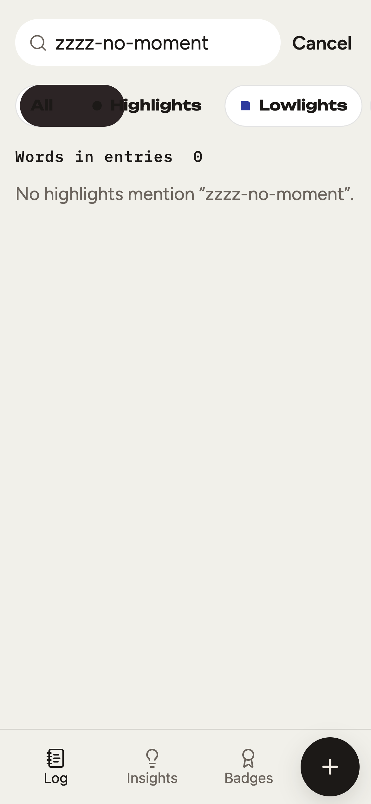 |
|
| Insights |
First insight · Sunday Your first one is on its way. Log a few days this week and Buffalo will have something to show you on Sunday. Log today |
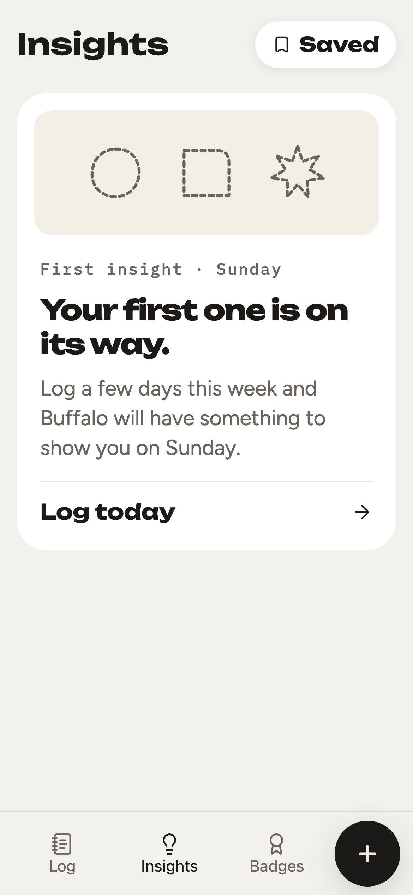 |
|
| Saved insights |
Nothing saved yet. Insights you keep show up here. |
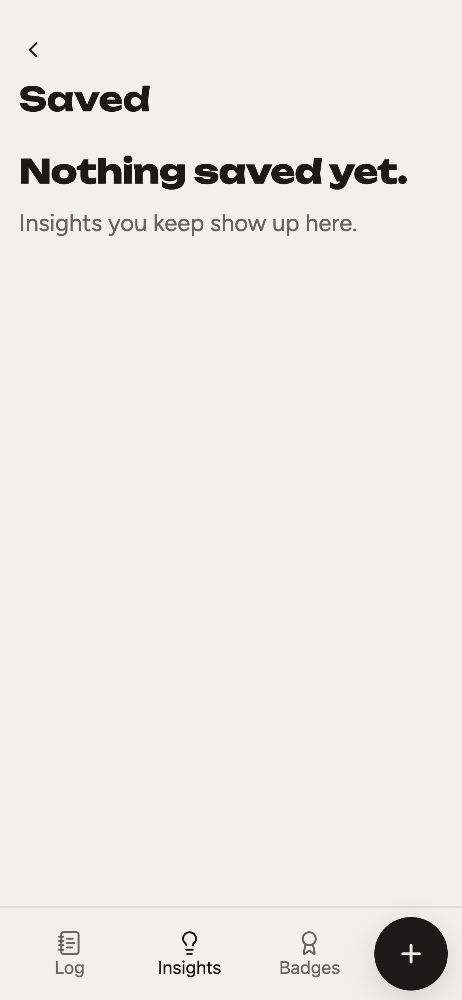 |
|
| Badges |
Earned by being yourself, not by showing up every day. None of them expire. NOVEMBER SPECIAL · 6 DAYS LEFT Pop Quiz Log a highlight about something new you learned this month. 7 of 19 An unearned badge has no date. A screen reader hears Not earned yet. An earned badge says Earned Sep 21. |
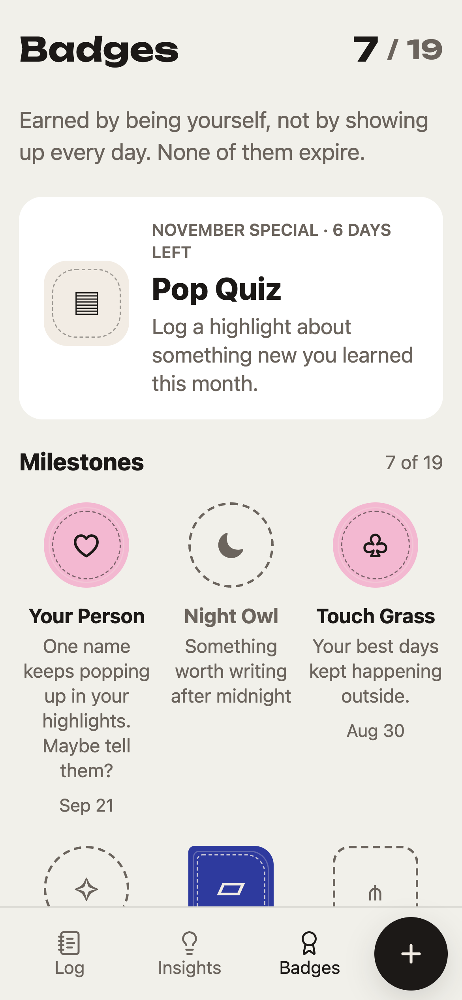 |
|
| Profile |
Patterns show up after about 20 logs. You’re at 3. Saved insights, 0 Chapters, 0 On Edit profile, an empty username reads Not set yet. The rings in this shot say 0 because the screenshot browser was hiding the log. You’re at 3 is the real account. |
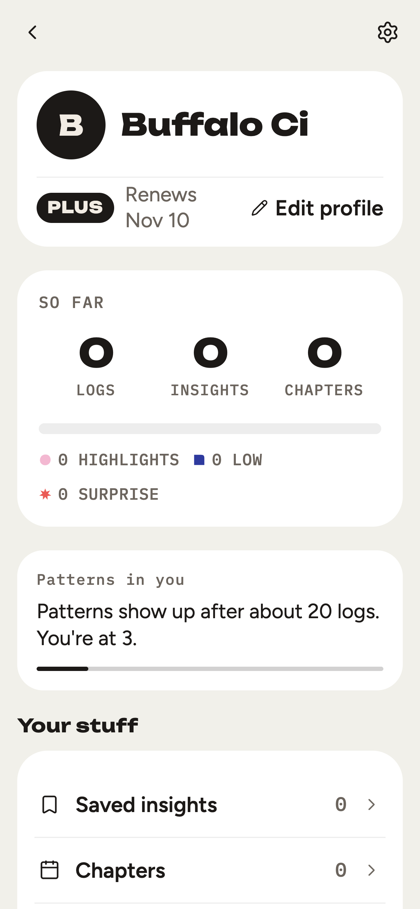 |
|
| Chapters |
There is no empty sentence. The only tile is New chapter. |
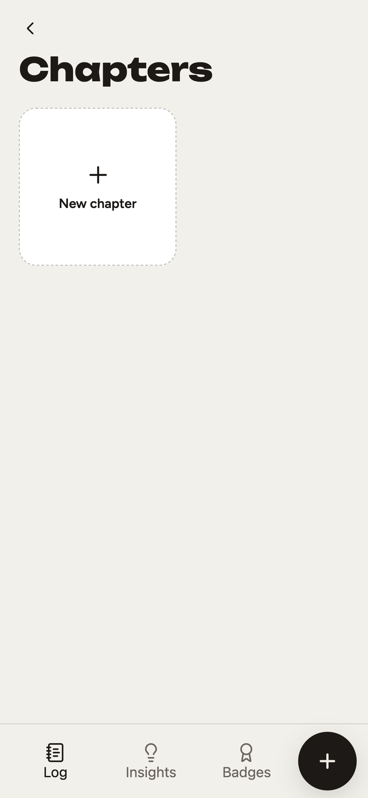 |
|
| Language search | No languages match 'zzzz' |
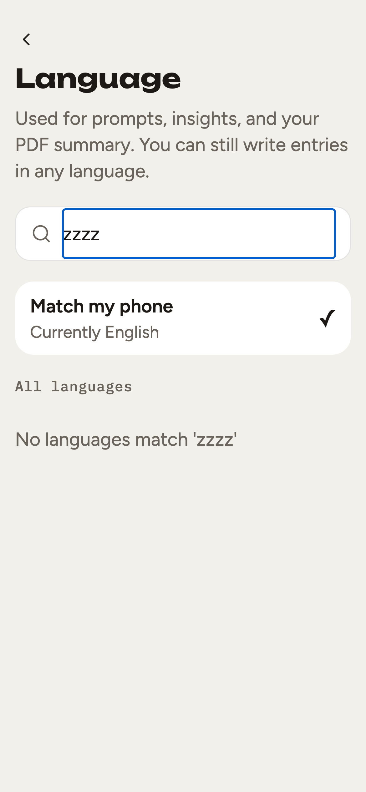 |
|
| Log, filtered day |
Nothing here for that day. A day that has moments, with a category filter that hides all of them. This account’s loaded days each include every category, so this line was not on screen. |
No screenshot | |
| Log, filtered list |
No matching moments in the loaded log. The same filter with no day selected, when the loaded log has none of that category. |
No screenshot | |
| Hold an empty day | Nothing yet |
No screenshot | |
| Symbol picker |
Nothing fits? Try a broader word, like “outdoors” or “trip”. Or skip it. A symbol is optional. |
No screenshot | |
| Place search |
Search for a place, or keep any word as just a name. No matches on the map. |
No screenshot |